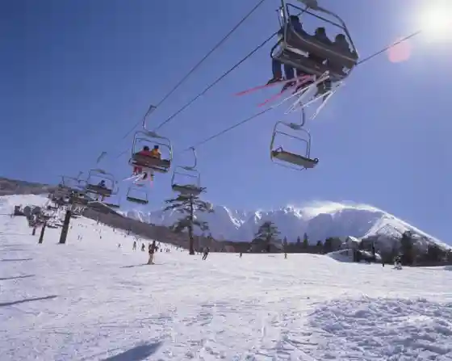
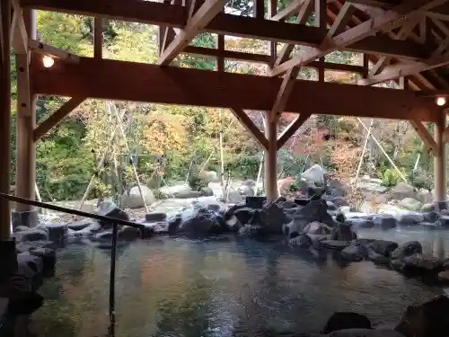
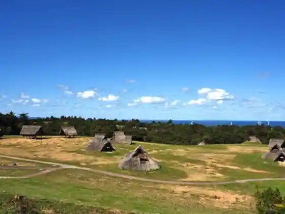
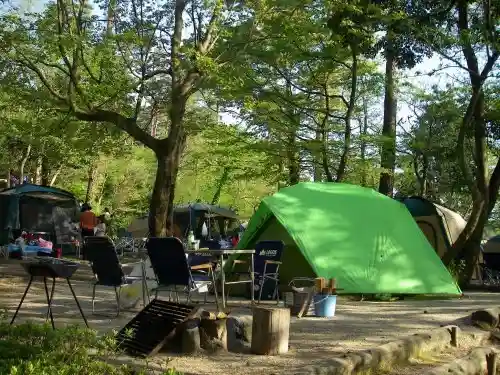

Daisen Howaito Resort (Daisen Ski Area)
Daisen, Tottori · 0859-52-2315 · Official / source link

Daisen Teramoto Do
Daisen, Tottori · 0859-52-2158 · Official / source link
Daisen Hi no Kami Gaku Onsen Go En Yu In
Daisen, Tottori · 0859-48-6801 · Official / source link

Saiki Banda Iseki
Daisen, Tottori · 0859-37-4000 · Official / source link

Mori no Kuni Daisen Fiirudoasurechikku
Daisen, Tottori · Official / source link

Nawa Shrine
Daisen, Tottori · 0859-54-2260 · Official / source link
Daijin Sanshin Sha Okunomiya
Daisen, Tottori · 0859-52-2507 · Official / source link
Ju Kumo Tera
Daisen, Tottori · 0859-54-3327 · Official / source link
Nio Do Park
Daisen, Tottori · 0859-52-2502 · Official / source link
Kocha Sofutokuriimu
Daisen, Tottori · 0859-54-6030 · Official / source link
Roadside Station Daisen Megumi Village
Daisen, Tottori · 0859-54-6030 · Official / source link
Nakayama Onsen (Yuyu Kurabu naspal)
Daisen, Tottori · 0858-49-3330 · Official / source link
Daisen Tera Amida Do
Daisen, Tottori · 0859-52-2158 · Official / source link
Joba Experience
Daisen, Tottori · 0859-53-8211 · Official / source link
Daisen Tozan
Daisen, Tottori · 0859-52-2502 · Official / source link
Buna no Mori Uoku
Daisen, Tottori · 0859-52-2502 · Official / source link
Daisen Kanko Shoko Ka
Daisen, Tottori · 0859-53-3110 · Official / source link
Daisen Joba Center
Daisen, Tottori · 0859-53-8211 · Official / source link
O Rai Ya Eki
Daisen, Tottori · 0859-53-3110 · Official / source link
Ugan Mizu
Daisen, Tottori · 0859-52-2502 · Official / source link
Daisen Nature Rekishikan
Daisen, Tottori · 0859-52-2327 · Official / source link
Mini Zazen Taiken to Kowa
Daisen, Tottori · 0859-52-2502 · Official / source link
Saiki Banda Iseki Iseki Sansaku Kodai Experience
Daisen, Tottori · 0859-37-4000 · Official / source link
Taue
Daisen, Tottori · 0859-53-8036 · Official / source link
Daisen Kanko Shoko Ka
Daisen, Tottori · 0859-53-3110 · Official / source link
Iyashi no Supirichuaruoku
Daisen, Tottori · 0859-53-8036 · Official / source link
O Ko Ranch
Daisen, Tottori · 0858-58-3718 · Official / source link
Buna Forest no Kodo Uoku
Daisen, Tottori · 0859-53-8036 · Official / source link
Su no Shu Experience
Daisen, Tottori · 0859-53-8036 · Official / source link
Satoyama Uoku
Daisen, Tottori · 0859-53-8036 · Official / source link
Akamatsu Ike
Daisen, Tottori · 0859-52-2502 · Official / source link
Daisen Town Hall
Daisen, Tottori · 0859-54-3111 · Official / source link